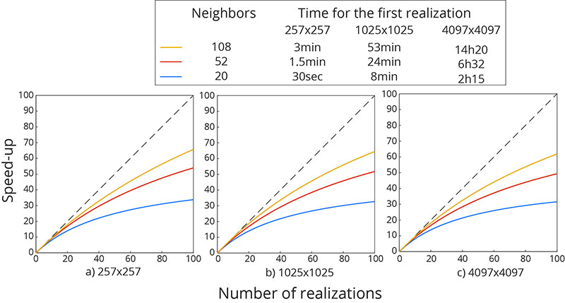
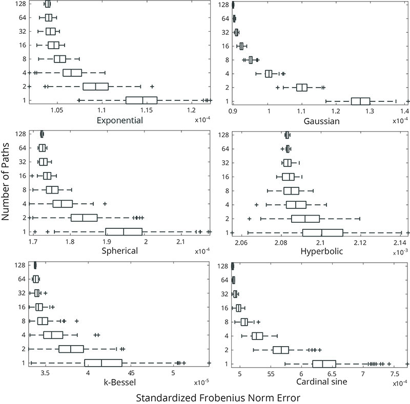
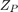
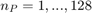
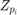
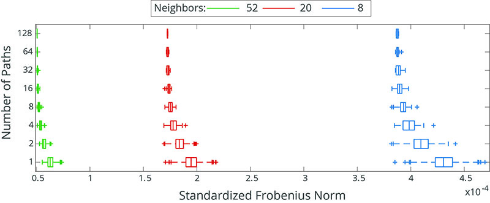
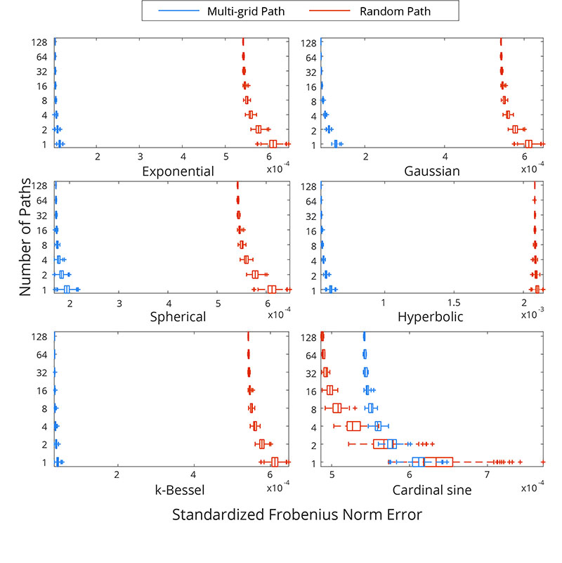
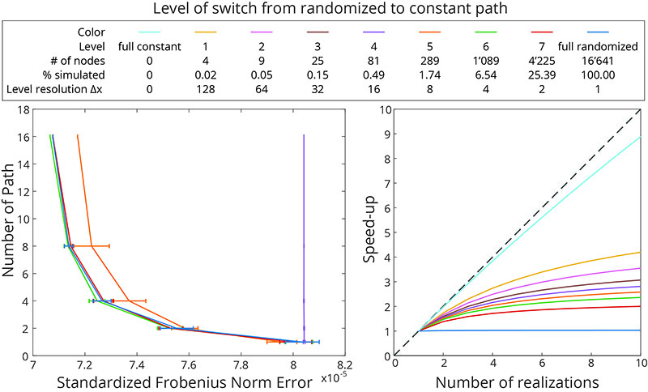
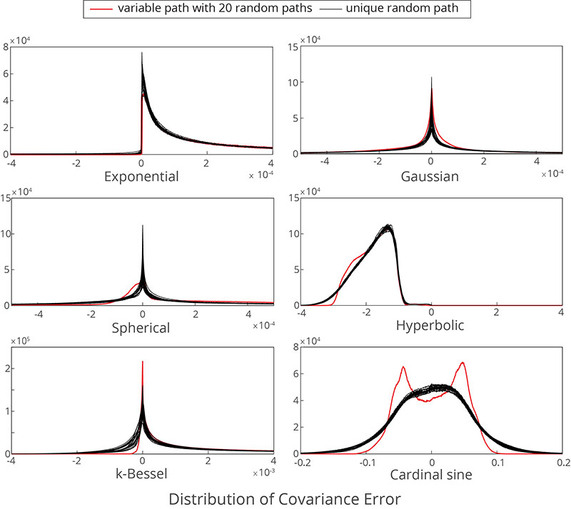

Script to reproduce the paper
Nussbaumer, Raphaël, Grégoire Mariethoz, Mathieu Gravey, Erwan Gloaguen, and Klaus Holliger. 2017. “Accelerating Sequential Gaussian Simulation with a Constant Path.” Computers & Geosciences. Retrieved DOI:<http://linkinghub.elsevier.com/retrieve/pii/S0098300417304685 10.1016/j.cageo.2017.12.006>.
Contents
clc; addpath('..'); addpath('../functions');
Figure 1

Speed-up as a function of the number of realizations performed for 3 differents grid sizes and neighbourhood sizes. The grid sizes were selected such that the multi-grid path is optimal and the neighbourhood size such that the resulting full neighbourhood is symmetric. The computational time for the first realization is also shown in the legend.
% General setting covar.model = 'spherical'; covar.azimuth = 0; covar.c0 = 1; covar.alpha = 1; covar.range0 = [15 15]; parm.seed_path = 'default'; parm.seed_search = 'shuffle'; parm.seed_U = 'default'; parm.saveit = 0; parm.mg = 1; neigh.wradius = 1; m = 1; % Define the range of grid size and neighborhood size N=2.^[8 10 12]+1;%[257 1025 4097]; K=[20 52 108]; T_trad_g=nan(numel(N),numel(K)); T_cst_g=nan(numel(N),numel(K)); T_cst_real=nan(numel(N),numel(K)); T_trad_real =nan(numel(N),numel(K)); for i_n=1:numel(N) for i_k=1:numel(K) nx = N(i_n); % no multigrid ny = N(i_n); neigh.nb = K(i_k); [~,t] = SGS_cst(nx,ny,m,covar,neigh,parm); title = ['T_cst_' num2str(N(i_n)) 'N_' num2str(K(i_k)) 'K' ]; T_cst_g(i_n,i_k) = t.global; T_cst_real(i_n,i_k) = t.real; [~,t] = SGS_trad(nx,ny,parm); title = ['T_trad_' num2str(N(i_n)) 'N_' num2str(K(i_k)) 'K' ]; T_trad_g(i_n,i_k) = t.global; T_trad_real(i_n,i_k) = t.real; end end figure(1); clf m=0:100; for i_n=1:numel(N) subplot(1,numel(N),i_n); hold on plot([0 100],[0 100],'--k') for i_k=1:numel(K) eta = ( T_trad_g(i_n,i_k) + (m-1).*T_trad_real(i_n,i_k)) ./ ( T_cst_par_g(i_n,i_k) + (m-1).*T_cst_par_real(i_n,i_k)); h(i_k)=plot(m,eta); end legend(h,{'20 Neighbors','52 Neighbors','108 Neighbors'}); axis equal tight xlabel('Number of realizations') ylabel('Speed-up') end
Reference to non-existent field 'range'.
Error in SGS_cst (line 44)
x = ceil( min(covar(1).range(2)*neigh.wradius, nx));
Error in script_paper (line 50)
[~,t] = SGS_cst(nx,ny,m,covar,neigh,parm);
Figure 2,3,4
% General setting covar.range0 = [15 15]; covar.azimuth = 0; covar.c0 = 1; covar.alpha = 1; parm.seed_path = 'shuffle'; parm.seed_search = 'shuffle'; parm.saveit = 0; parm.mg = 1; neigh.wradius = 1; neigh.nb = 20; m = 1; nx = 2^6+1; ny = 2^6+1; % Defines the type of variogram tested vario = {'exponential', 'gaussian', 'spherical', 'hyperbolic','k-bessel', 'cardinal sine'}; % Compute the true covariance fo each covariance model [Y, X] = ndgrid(1:nx,1:ny); XY = [Y(:) X(:)]; for v=1:numel(vario) covar.model = vario{v}; covar = kriginginitiaite(covar); DIST = squareform(pdist(XY*covar.cx)); CY_true{v} = kron(covar.g(DIST), covar.c0); end err_frob_fx = @(CY,v) sqrt(sum((CY(:)-CY_true{v}(:)).^2)) / sum((CY_true{v}(:).^2)); % Simulation N = 10; vario_g=cell(numel(vario),1); D = pdist2(XY,XY); h = unique(D); h = h(h<=parm.k.covar.range0(1)*1.5); parfor v=1:numel(vario) parm1=parm; parm1.gen.covar.model = vario{v}; CY=repmat({nan(ny*nx,nx*ny,2)},N,1); eta{v}=cell(N,1); nn=cell(N,1); for n=1:(2^(N-1)) vec = de2bi(n-1,N); CY{1}(:,:,vec(1)+1) = full(SGS_varcovar(nx,ny,parm1)); eta{v}{1} = [eta{v}{1}; err_frob_fx(CY{1}(:,:,vec(1)+1),v)]; nn{1} = [nn{1}; 2^(1-1)]; i=1; while (vec(i)==1) CY{i+1}(:,:,vec(i+1)+1) = mean(CY{i},3); eta{v}{i+1} = [eta{v}{i+1}; err_frob_fx(CY{i+1}(:,:,vec(i+1)+1),v)]; nn{i+1} = [nn{i+1}; 2^(i)]; i=i+1; end disp(['N: ' num2str(n) ]) end vario_g{v} = nan(N,numel(h)); for n=1:N for i=1:numel(h) id = D ==h(i); id2 = CY{n}(id); vario_g{v}(n,i) = sum(id2)/sum(id(:)); end end end % Save result %save(['./cst_path_paper/frobenium_65n_20k_512N_1MG'],'eta','vario','vario_g','n','parm','nx','ny');
Figure 2

Boxplots of the SFN of simulated RFs  for different numbers of simulation paths  . 512 simulated RFs  were computed and different numbers of them combined to construct the simulated RFs with a fully randomized path according to equation 20.
figure(2);clf; hold on; lim=8; load('Y:/SGS/cst_path_paper/frobenium_65n_20k_512N_1MG'); for v=1:numel(vario) subplot(numel(vario)/2,2,v); hold on; boxplot(cell2mat(eta{v}(1:lim)),cell2mat(nn(1:lim)),'Orientation','horizontal','Color',[0 113 188]/255); axis tight; xlabel(['Number of Path\newline' vario{v} ' variogram']); ylabel(['Standardized Frobenius Norm Error']) end
Figure 3

Boxplot of the SFN for several simulated RFs for different numbers of simulation paths and different neighbourhood sizes for a spherical covariance function.
figure(3); clf; hold on; lim=8; filename2={'frobenium_sph_8_512', 'frobenium_sph_20_512' ,'frobenium_sph_52_512'}; col={'b','r','g','y'}; for i=1:numel(filename2) s=load(['result-SGSIM/Constant Path/' filename2{i}]); xlim_b=get(gca,'xlim'); boxplot(cell2mat(s.eta(1:lim)),cell2mat(nn(1:lim)),'Orientation','horizontal','color',col{i},'symbol',['+' col{i}]); xlim_a=get(gca,'xlim'); if i>1 xlim([ min(xlim_b(1), xlim_a(1)) max(xlim_b(2), xlim_a(2))]) end end hLegend = legend(findall(gca,'Tag','Box'), {'Neighboors: 8', 'Neighboors: 20', 'Neighboors: 52'}); ylabel('Number of Path'); xlabel('Standardized Frobenius Norm Error')
Figure 4

Boxplot of the SFN for several simulated RFs using different numbers of simulation paths for multi-grid or random simulation paths.
figure(4);clf;
lim=8;
filename2={'frobenium_65n_20k_512N_0MG' ,'frobenium_65n_20k_512N_1MG'};
col={'b','r','g','y'};
for v=1:numel(vario)
subplot(numel(vario)/2,2,v); hold on;
for i=1:numel(filename2)
s=load(['Y:/SGS/cst_path_paper/' filename2{i}]);
xlim_b=get(gca,'xlim');
boxplot(cell2mat(s.eta{v}(1:lim)),cell2mat(nn(1:lim)),'Orientation','horizontal','color',col{i},'symbol',['+' col{i}]);
xlim_a=get(gca,'xlim');
if i>1
xlim([ min(xlim_b(1), xlim_a(1)) max(xlim_b(2), xlim_a(2))])
end
end
hLegend = legend(findall(gca,'Tag','Box'), {'Random Path', 'Mutli-grid Path'});
ylabel('Number of Path');
xlabel('Standardized Frobenius Norm Error')
end
Figure 5

(Left) Mean and standard deviation of the SFN using up to 16 different randomized multi-grid paths for simulations where the constant path approach is switched on at different grid level. Note that the curves for levels 1-4 and for the fully constant path are superimposed. (Right) Corresponding simulation speed-up of simulation.
% General setting covar.model = 'gaussian'; covar.range0 = [15 15]; covar.azimuth = 0; covar.c0 = 1; covar.alpha = 1; parm.seed_path = 'shuffle'; parm.seed_search = 'shuffle'; parm.saveit = 0; parm.mg = 1; neigh.wradius = 1; neigh.nb = 20; m = 1; nx = 2^7+1; ny = 2^7+1; % Build true covariance matrice [Y, X]=ndgrid(1:nx,1:ny); XY = [Y(:) X(:)]; covar = kriginginitiaite(parm.k.covar); DIST = squareform(pdist(XY*covar.cx)); CY_true = kron(covar.g(DIST), covar.c0); err_frob_fx = @(CY) sqrt(sum((CY(:)-CY_true(:)).^2)) / sum((CY_true(:).^2)); N=2; CY=repmat({nan(ny*nx,nx*ny,2)},N,1); eta=cell(N,1); nn=cell(N,1); for n=1:(2^(N-1)) vec = de2bi(n-1,N); CY{1}(:,:,vec(1)+1) = full(SGS_varcovar(nx,ny,parm)); eta{1} = [eta{1}; err_frob_fx(CY{1}(:,:,vec(1)+1))]; nn{1} = [nn{1}; 2^(1-1)]; i=1; while (vec(i)==1) CY{i+1}(:,:,vec(i+1)+1) = mean(CY{i},3); eta{i+1} = [eta{i+1}; err_frob_fx(CY{i+1}(:,:,vec(i+1)+1))]; nn{i+1} = [nn{i+1}; 2^(i)]; i=i+1; end disp(['N: ' num2str(n) ]) end sx = 1:ceil(log(nx+1)/log(2)); sy = 1:ceil(log(ny+1)/log(2)); sn = max([numel(sy), numel(sx)]); nb = nan(sn,1);start = zeros(sn+1,1); path = nan(nx*ny,1); Path = nan(ny,nx); for i_scale = 1:sn dx(i_scale) = 2^(sn-sx(min(i_scale,end))); dy = 2^(sn-sy(min(i_scale,end))); [Y_s,X_s] = ndgrid(1:dy:ny,1:dx(i_scale):nx); % matrix coordinate id = find(isnan(Path(:)) & ismember(XY, [Y_s(:) X_s(:)], 'rows')); nb(i_scale) = numel(id); start(i_scale+1) = start(i_scale)+nb(i_scale); path( start(i_scale)+(1:nb(i_scale)) ) = id(randperm(nb(i_scale))); Path(path( start(i_scale)+(1:nb(i_scale)) )) = start(i_scale)+(1:nb(i_scale)); end % save(['./cst_path_paper/frobenium_129n_20k_16N_MG_' num2str(parm.seed_path) 'CSTP'],'eta','nn','parm','nx','ny','nb'); % Figure figure(10);clf; hold on; CST=1:9; cnb = cumsum(nb); ldgd=cell(numel(CST),1); for i = 1:numel(CST) load(['Y:/SGS/cst_path_paper/frobenium_129n_20k_16N_MG_' num2str(CST(i)) 'CSTP']) %boxplot(cell2mat(eta),cell2mat(nn),'Orientation','horizontal','Color',[0 113 188]/255); M = cellfun(@median,eta); S = cellfun(@std,eta); n = flipud(cellfun(@numel,eta)); errorbar(n,M,S) ldgd{i} = ['Level ' num2str(CST(i)-1) ' (' num2str(cnb(CST(i)-1)) ' nodes | ' num2str(cnb(CST(i)-1)./cnb(end)*100,'%4.2f') '% | \Deltax=' num2str(dx(CST(i)-1)) ')' ]; end view(90,-90); box on xlabel('Number of Path'); ylabel('Standardized Frobenius Norm Error') title('Constant path from level x with Multi-grid'); legend(ldgd) % General setting parm.k.covar.model = 'spherical'; parm.k.covar.azimuth = 0; parm.k.covar.c0 = 1; parm.k.covar.alpha = 1; parm.seed_search = 'shuffle'; parm.k.covar.range0 = [15 15]; parm.k.wradius = 3; parm.mg = 1; nx = 2^7+1; % no multigrid ny = 2^7+1; parm.k.nb = 20; seed_path=1:9; nt=2; t_real=nan(nt,numel(seed_path)); t_global=nan(nt,numel(seed_path)); for j=1:numel(seed_path) parm.seed_path = seed_path(j); for i=1:nt profile on [~,t] = SGS_hybrid(ny,nx,parm); profile viewer t_global(i,j)=t.global-t.covtable; t_real(i,j)=t.real; end end clear eta; m=1:10; for i_m=m eta(i_m,:) = i_m.*mean(t_global) ./ ( mean(t_global) + (i_m-1).*mean(t_real)); end figure(5); clf; hold on; plot(eta) plot([0 10], [0 10], '--k') legend(ldgd); axis tight equal xlabel('Number of realizations') ylabel('Speed-up')
Figure 6

Older version of the code not maintained...